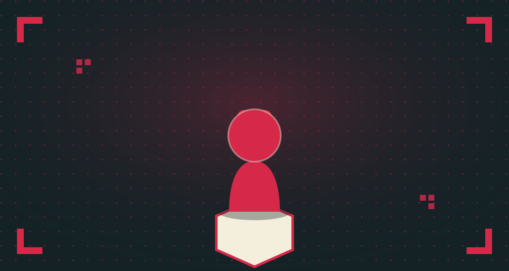

Best Amiibo Starter Picks for New Collectors on a Budget

Start with what you already play
The single best starter rule: buy amiibo for games you already own and enjoy, not for rarity or hype. A figure that unlocks something in a game sitting on your shelf gives you an immediate reason to use it, rather than becoming a mystery box you never tap.
Good beginner categories
- Current-release Mario line figures — consistently in stock, affordable, and compatible with a wide range of games including Mario Kart and Mario Party entries.
- Animal Crossing cards over figures, if budget matters — a pack of cards costs a fraction of a single figure and gets you deeper into the villager-collecting side of the hobby faster.
- Splatoon Inkling/Octoling figures — if you play Splatoon at all, these unlock genuinely exclusive gear, which makes them a better "gameplay value" starting point than most other lines.
What to avoid as a first purchase
- Discontinued first-wave Smash figures. They're collector-grade purchases now, priced accordingly, and not a beginner-friendly entry point.
- Anything without a clear compatible game you own. Buying purely on character appeal is fine once you're hooked, but it's an easy way to end up with a shelf of figures you've never tapped.
Building a collection habit
Most collectors who stick with the hobby long-term start by picking up new releases as they launch, rather than trying to backfill older figures right away. It's cheaper, it's easier to find in stock, and it naturally builds a collection tied to games you actually played.
Disclosure: As an Amazon Associate, this site earns from qualifying purchases made through links like the one below.
Related pick on Amazon
See current options & pricing →
(Not yet an affiliate link — add your Associates tag once approved.)